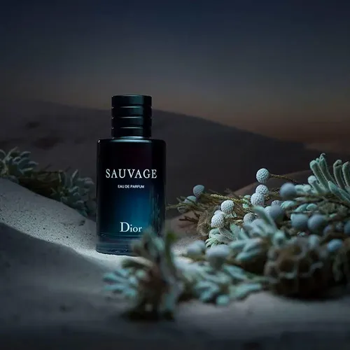
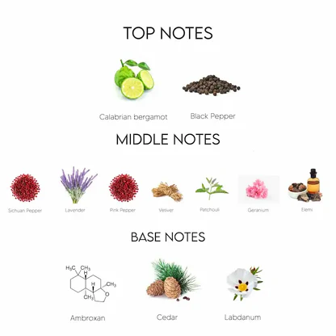

Descripción
Dior Sauvage es una fragancia masculina lanzada en 2015, creada por el perfumista François Demachy. Está inspirada en espacios abiertos y la naturaleza. Destaca por su alta fijación gracias al ambroxan, bergamota de Calabria y pimienta, siendo una de las fragancias más populares y versátiles del mercado.
Es uno de los perfumes más populares del mundo gracias a su aroma fresco, elegante y versátil; ideal para uso diario pero con suficiente sofisticación para eventos especiales.

Notas del perfume
- Salida: Bergamota y pimienta
- Corazón: Lavanda y vetiver
- Fondo: Ambroxan y cedro

Características
- Tipo: Eau de Toilette
- Duración: 6 a 10 horas
- Uso: Diario y ocasiones especiales
Opinión
Es un perfume muy versátil, perfecto para uso diario y eventos importantes.